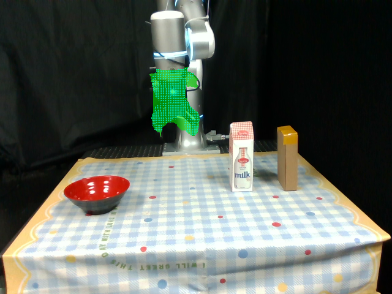
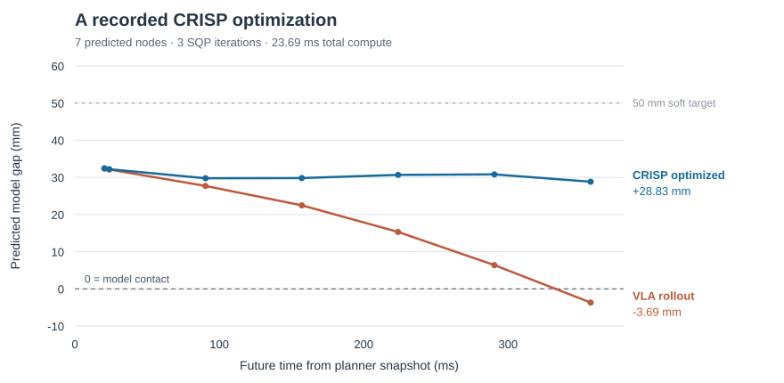

静态障碍 · 学习避障
依据 VLSA-RL 的残差学习思路，在 CBF（控制屏障函数）避障约束下，用 GRPO（组相对策略优化）训练小型动作修正网络。基础 VLA 保持冻结，训练与评估均在真实机械臂上进行。
这两个项目均开展于我在清华大学安全控制技术研究中心实习期间。我参与了两篇具身智能安全控制相关论文的研究工作，并在相关研究基础上，设计和实现了面向真实机械臂的实验系统。从 VR 示教接口、数据采集与处理、模型微调，到避障算法集成、真机强化学习和实验评估，我独立完成了两个项目的系统搭建、算法部署与真机验证。
文本指令驱动的自主执行
VLA（视觉语言动作模型）将相机图像、任务文本与机器人状态转换为动作。除微调前对照外，本页自主操作使用的基础策略均由我基于 OpenPI 的 π0.5 Base（pi05_base），通过真实机械臂示教数据微调得到。
例如输入“Pick up the cup and place it in the bowl.”（拿起杯子，放入碗中。）
依据 VLSA-RL 的残差学习思路，在 CBF（控制屏障函数）避障约束下，用 GRPO（组相对策略优化）训练小型动作修正网络。基础 VLA 保持冻结，训练与评估均在真实机械臂上进行。
依据 CRISP（基于后续动作预览的风险感知优化）的思路，结合假手运动与机械臂后续动作预测接近风险，提前调整运动，并由 CBF 进行执行前检查。本项目不训练残差网络。
参与论文
ICLR 2027 · Rebuttal 阶段
VLSA-RL 研究如何让已有抓取能力的视觉语言动作模型，在障碍物附近兼顾运行安全与任务执行成功率。CBF 可以修正危险动作，但冻结的基础模型不会由此学会避障，反复干预还可能妨碍抓取与放置。论文通过强化学习训练一个小型残差网络，在基础动作上加入调整，使动作更符合安全约束，同时继续完成任务，无需重新训练整个基础模型。
我依据这一思路设计了纸盒抓取实验，要求机械臂根据文本指令，将棕色纸盒绕过牛奶盒并放入碗中。真机系统需要将视觉定位、动作残差和 CBF 接入同一执行流程，并处理坐标系、动作尺度与控制时序。残差策略直接从真实操作的完成情况和碰撞反馈中学习。
实验依次比较纯 VLA、加入 CBF、残差策略训练初期与 GRPO 训练后的表现。
微调后的 VLA 直接执行纸盒抓取任务，未加入避障算法。视频中，夹爪朝目标纸盒径直前进，没有绕开牛奶盒，随后将其撞倒。
在基础 VLA 上引入 CBF，处理夹爪接近牛奶盒时的碰撞风险。视频中，机械臂末端已能够绕开障碍物，但在抓取纸盒后的搬运过程中仍发生了碰撞。这是因为当前实现仅对夹爪进行了碰撞建模，未将被抓取的纸盒纳入避障约束。仅考虑夹爪的避障，还不足以保证整个搬运过程的安全性。
为改善带载搬运，在 VLA 与 CBF 之间加入可学习的残差策略。训练初期，动作调整可能干扰抓取位置、姿态以及后续放置。下面两段视频分别展示了抓取失败和搬运停滞。第一段中，夹爪推倒了目标纸盒，未能将其抓起；第二段中，机械臂绕过障碍后在空中反复调整，未能完成放置。这两种现象暴露了训练初期策略在抓取精度和任务衔接上的不足。残差策略需要在学习避障的同时保留原有的抓取能力，并继续完成搬运与放置。
抓取失败，夹爪推倒纸盒，未能抓起目标。
纸盒已提起并经过障碍，随后在空中反复调整，未完成放置。
随后使用 GRPO 在真实机械臂上反复采集、评价并更新残差策略，基础 VLA 参数保持冻结。训练后的视频中，机械臂接近并抓起纸盒，带载绕过牛奶盒，最后将纸盒放入碗中，全程未发生碰撞。
GRPO 的学习信号来自同一组真实操作的结果差异。每轮用当前策略尝试不同动作，根据任务完成与碰撞情况计算奖励，再更新残差网络并继续采集。
更新记录包含 29 个批次，其中 25 个完成策略更新，4 个跳过更新。最终选用 update25。按每次有效更新 1 组、每组 8 条的记录配置计算，参与有效更新的训练轨迹为 200 条；跳过的批次与独立评估不计入其中。
独立评估分别使用 update0 与 update25 模型权重，各测试 20 次。无碰撞完成抓取与放置的比例由 2/20 提高至 12/20。两组均启用残差策略与 CBF，比较的是 GRPO 训练前后的系统表现。
启动时识别牛奶盒、目标纸盒和放置碗，并采集夹爪区域的深度信息，为三维建模提供输入。下图来自同一次实验的不同初始化步骤，并非同一帧图像的连续处理结果。
区分障碍物、抓取目标与放置区域，提取各物体的图像分割结果。

分割夹爪区域，在有效深度位置采样，为夹爪几何测量与拟合提供输入。

参与论文
研究进行中
项目一处理静态障碍，项目二在抓取任务中加入移动假手。其方法依据是 CRISP（利用后续动作预览进行风险预测与避障优化的方法）。VLA 预测的一段动作中，只有前几个动作会先被执行，但后面的动作仍可用于判断未来风险。利用这段预览，系统可以在机械臂与假手进一步接近前调整运动。
我围绕这一思路实现了假手三维定位与运动估计，将障碍预测和机械臂动作预测对齐，并接入异步优化与命令执行流程。CRISP 负责预测避障，CBF 根据当前三维几何关系与假手运动状态，检查待发送动作是否满足避障约束；基础 VLA 继续提供抓取与放置动作。
在这些测试中，假手进入并逐渐靠近机械臂，纯 VLA 仍沿原任务路径运动，没有出现针对假手的避让动作，最终与假手发生碰撞。正面和斜前方视频记录了不同测试的表现。
加入 CRISP 后，机械臂在假手靠近时调整运动，假手撤出后继续完成放置。下方片段突出避让动作，完整视频保留抓取、避让与放置过程。
执行过程分为预测、优化和检查三个环节。CRISP 根据后续接近风险调整动作，CBF 检查准备发送的命令是否满足当前约束。
剩余动作序列＋假手运动估计 → 未来接近关系 将机械臂的预测运动与假手的短时轨迹对齐，检查后续动作中的接近风险，而不只判断眼前的位置关系。
CRISP 优化动作序列 → 提取当前可执行动作 在尽量保留原任务动作的同时降低预测风险，使机械臂在接近假手前就开始调整运动。
最新状态＋待执行动作 → CBF 检查 → 发送命令 CBF 根据末端与假手的当前模型间隙、假手运动估计及待执行动作，检查两者的接近速度是否满足屏障函数约束。检查通过时保留该动作；不满足时，在允许的动作范围内求解修正。它检查的是当前动作对避障约束的影响，而不是重新规划整条绕行路径。
RGB-D 感知持续更新假手的三维位置与运动状态。感知、预测优化和控制分开调度，执行端结合最新状态检查可用的优化结果，使提前规划与当前安全检查衔接。
这张图取自一次实际规划记录。沿原动作继续运动，约 0.36 秒后的末节点预测模型间隙为 −3.69 mm；经 CRISP 优化后，该节点变为 +28.83 mm。它展示了同一状态下，优化如何改变后续的预测接近关系。

两个项目共用我搭建的示教、数据处理与模型微调流程。先获得能根据文本完成抓取与放置的基础策略，再分别开展静态场景的残差强化学习和动态场景的预测避障实验。
使用 Meta Quest 3 手柄控制机械臂末端和夹爪，人工完成接近、抓取、搬运与放置。前视相机记录桌面与目标关系，腕部相机记录局部抓取过程。
在上述开源工具与参考实现的基础上，本项目完成 Rizon 4 控制接口、动作尺度与坐标映射适配，并实现双相机与机器人状态的同步采集、轨迹保存和训练数据转换。
每条示教按 episode 保存为 HDF5，同时记录两路 RGB、机器人状态、夹爪反馈、动作指令与时间戳。任务文本随轨迹保存，用于后续语言条件训练。
| 示教数据 | 轨迹总数 | 数据帧总数 | 记录频率 |
|---|---|---|---|
| 桌面抓取与放置 | 315 | 31,780 | 15 Hz |
示教数据覆盖纸杯、纸盒等物体的抓取与放置，合计 315 条轨迹、31,780 帧，包含任务示范及补充采集。示教用于基础模型微调，与后续强化学习交互分开记录。
将原始 episode 转换为 LeRobot v2.1 格式，按时间关系组织“当前观测—后续动作”训练样本，并保留任务标签和轨迹边界。转换时检查时间连续性，对无法使用的区间进行分段，避免把断档两侧的状态与动作拼成连续示范。
单步输入包含前视 RGB、腕部 RGB、末端位姿和夹爪状态；动作由三维平移速度、三维旋转速度与夹爪指令组成。统一坐标系、旋转表示及夹爪范围，使训练数据与部署接口使用一致的含义。
基础模型权重为
Physical Intelligence π0.5 Base（OpenPI，
pi05_base
）
。使用真实机械臂示教进行 LoRA 微调。任务文本、双相机图像与机器人状态作为输入，示教动作序列作为监督目标。后续自主抓取实验使用微调后的模型权重。
在视觉语言主干与动作专家上使用 LoRA，训练适配参数。模型每次输出 10 步动作块；归一化与动作尺度配置随模型一起用于真机推理。
部署时输入任务指令，VLA 持续读取两路相机和机器人状态，生成后续动作。控制端将归一化动作转换为末端运动与夹爪命令，并随着新观测更新动作。
下面先比较微调前后的纸杯抓取，再检查加入干扰物、改变目标与放置位置后的表现。
微调前，机械臂运动明显偏离任务，末端向上移动，远离桌面上的纸杯，无法完成接近目标和抓取操作。在本实验配置下，通用预训练模型无法直接执行纸杯抓取任务，需要适配相机观测、机器人状态和动作接口，并通过真机示教学习对应的操作。
真机示教建立了本场景下图像、文本、机器人状态与正确动作之间的对应关系。完成数据适配和微调后，机械臂能够接近纸杯、完成抓取，并将其放入碗中。
在桌面加入多个非目标物体作为干扰，同时改变抓取目标和碗的位置。两段视频分别要求抓取纸杯与纸盒。模型需要依据文本选出目标，在干扰物之间完成抓取，再根据当前画面找到碗并放置。
| 机械臂 | Flexiv Rizon 4，7 自由度；Flexiv RDK 1.9 |
|---|---|
| 电动夹爪 | Flexiv GN01，最大开口 100 mm |
| 前视相机 | Intel RealSense D435，提供桌面 RGB-D 观测 |
| 腕部相机 | Intel RealSense D455，提供近距离抓取图像 |
| 示教设备 | Meta Quest 3 及手柄 |
| 基础操作模型 | Physical Intelligence π0.5 Base（pi05_base），OpenPI 实现；PaliGemma / Gemma 2B 视觉语言主干＋300M 动作专家，采用 LoRA 微调 |
| 数据与动作接口 | LeRobot v2.1；15 Hz 示教数据，10 步动作块；7 维动作包含平移、旋转与夹爪指令 |
| 运行环境 | Ubuntu 22.04.5 LTS（Jammy）；VLA 推理、视觉感知与机械臂控制独立运行 |
除 VR 工具外，基础模型与训练使用 OpenPI / π0.5 ，数据组织采用 LeRobot ，视觉感知使用 GroundingDINO 与 MobileSAM ；机器人接口与夹爪几何参考来自 Flexiv RDK 和 flexiv_description 。
离线运动学分析还使用了 Flexiv 官方
flexiv_description
中的 Rizon 4 运动学参数（
default_kinematics.yaml
）、关节限位（
joint_limits.yaml
）及机器人描述文件。基于这些参数计算正运动学与雅可比矩阵，用于分析实验中的机械臂构型和运动问题；并非另一个在线避障模块。